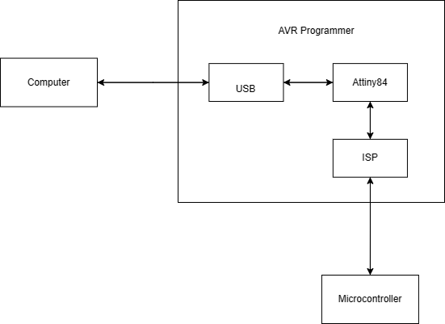
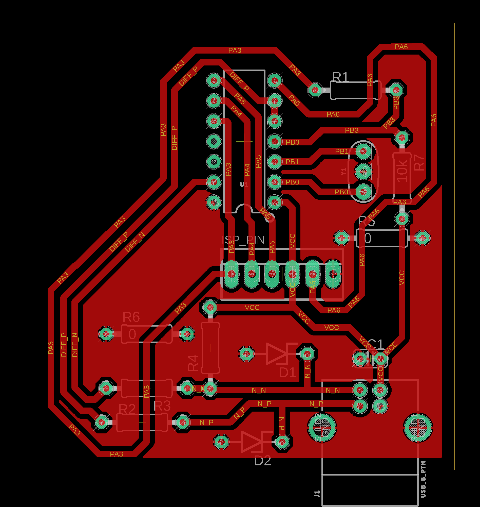

Block Diagram
There were three main blocks in the AVR programmer. The attiny84, the USB and the ISP. The programmer is a link between a PC and a microcontroller. It uses the USB to communicate with the PC and the ISP to communicate with the microcontroller
Circuit Design
The circuit is simple and does not have many elements. Mainly, it has six elements. The Attiny, USB type B, ISP 6-pin header, voltage clippers, bypass capacitors and 20 MHz resonator. The schematic and layout were designed using EAGLE.
● The external clock source is for more accuracy.
● The voltage clippers diodes are zeners that are used to regulate the voltage across the USB from 5 to 3.3 volts.
● The USB D- line is the one being pulled HIGH with a 1.5K resistor to identify the USB as a low speed device to the host.
● A 1µF capacitor to reduce power supply noise.
● A 0Ω resistor is connected between the reset of the ISP and the reset of the Attiny that should
be removed after programming the board to avoid reprogramming of the board
PCB Layout:
The PCB Design was challenging where it had to be a small PCB but the used components were THT packages and took a lot of space on a single layer PCB. This meant that routing all the traces of the ATTiny84 with the ISP header pins and the USB pins was difficult but it was easier to put the components in the assembling process.
Throughout the designing process a Design Rule Check was followed to output the layout according to standards as mentioned down below.
● minimum trace clearance: 0.5mm
● minimum Pad clearance: 0.5mm
● minimum distance between components and board dimensions: 1.5mm
● minimum drill/hole: 0.8mm
● minimum trace width: 0.5mm
Some components had special requirements for the routing process. The first component was the resonator which needs its two traces to be exactly equal in length to avoid latency due signal traveling which will affect the frequency and introduce error when used as an external clock to the ATTiny84. The second component was the USB that has D+ and D- differential pair pins that require to be routed next to each other and approximately the same length.
Fabrication and Assembly
In this project, we used the SRM-20. The PCB was created in three stages. First, the traces, using a V-bit of 1.15mm tip. Secondly, the drill holes, using a 0.8 milling bit. Third, is the contour, using a 1.6 milling bit. The PCB is about 5.3*5.7 cm. After creating the PCB, the components were soldiered on it. All of the components were THT.
Firmware and Testing
To program the board, you need to use another programmer. In the project, the Arduino UNO was used following this tutorial. The following connections were made
| Arduino | Board ISP |
|---|---|
| D10 | Reset |
| D11 | MOSI |
| D12 | MISO |
| D13 | SCK |
| GND | GND |
Testing
The necessary software for each operating system can be found in this tutorial. In this project we used Ubuntu on Oracle VM VirtualBox. After installing the necessary software, the makefile should be updated for the kind of programmer used in this case, arduino. The FABISP firmware was used. Finally the board was programmed.
Challenges
Creating this board there were some obstacles and mistakes we had to fix. These were the mostimportant problems we faced.
● The first layout design of the board was made without the DRC and as a result the traces on the actual PCB had a lot of copper around them which made them shorted together.

● It's recommended to use linux rather than windows. This is because Windows had
miscellaneous problems where it couldn't install AVRdude correctly and couldn't run the
makefile due to errors.
● It is recommended to use a capacitor between the reset pin and the ground pin to avoid
fritzing. Otherwise, you will not be able to set the fuses of your board.